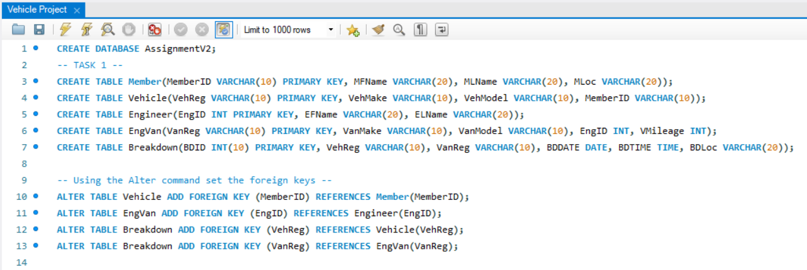
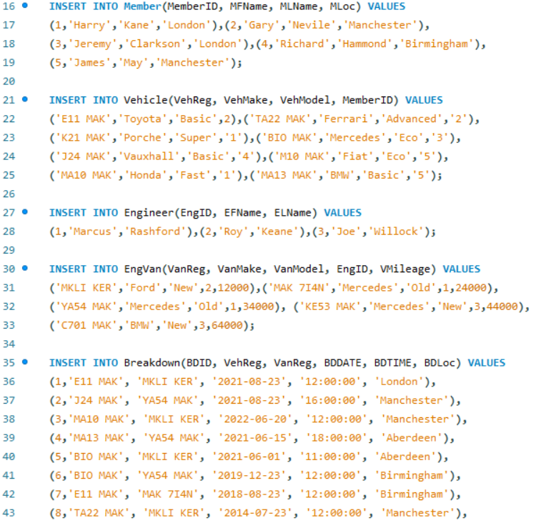
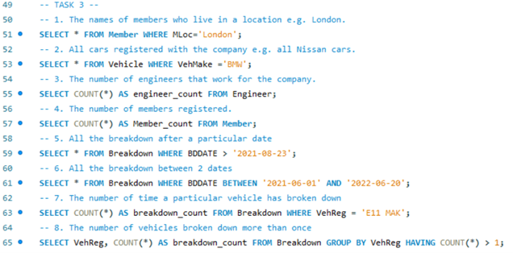
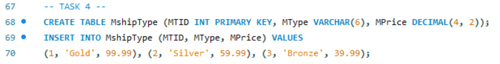
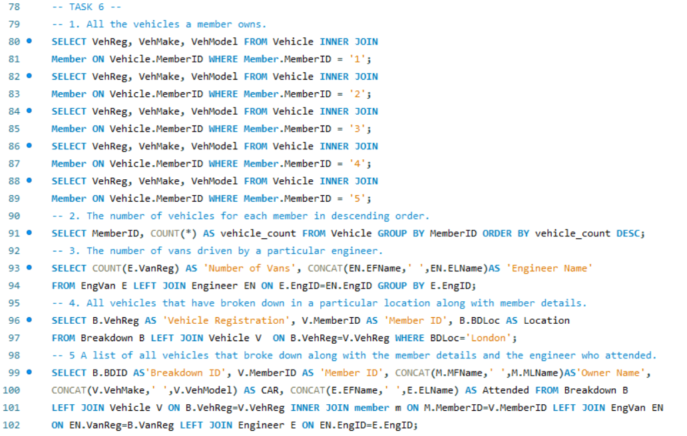
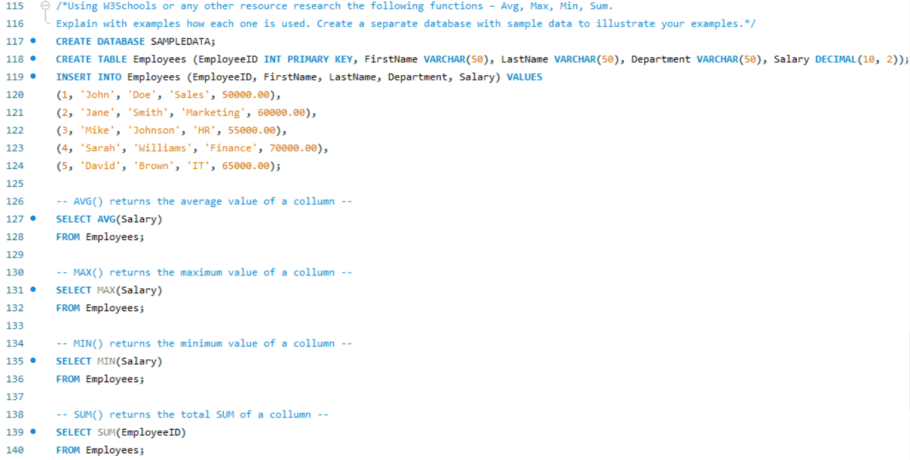
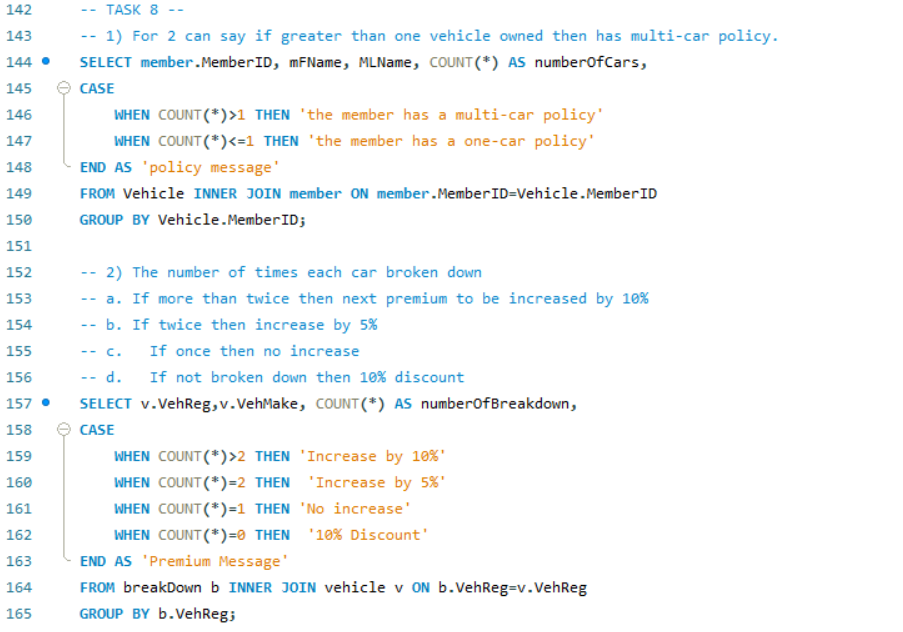

MySQL Database designProject

For this project, I undertook the task of designing a data model for a breakdown assistance company using MySQL. The primary concept revolves around company members being required to register, with the flexibility of owning multiple vehicles. When a vehicle experiences a breakdown, an engineer is dispatched in a designated van for the service call. A crucial aspect of the operation involves the assignment of a new van to an engineer as soon as their current one surpasses the mileage threshold of 80000 miles.
I created a new database and inside it created the following tables Member, Vehicle, Engineer, EngVan and Breakdown. Then using the alter command I set the foreign keys for each table.
For the next part I populated data inside the tables using the insert into statement.
I then performed the following queries using statements such as SELECT * FROM and SELECT COUNT (*) in the image below.
In the following task I created an additional table entering data according to membership type, using datatypes such as numeric( INT, DECIMAL), string (VARCHAR) and including the primary key. In the next step of the project, I created a new database and inside it introduced an additional table to include data related to various membership types. To represent the data effectively, I used different data types such as numeric types (INT and DECIMAL), as well as string type (VARCHAR) and a primary key that uniquely identifies each record.
In this task I used the "ALTER" command to extend the functionality of the database by introducing a new field labelled "MTID" (Membership Type ID). This field was set as a foreign key (FK) and designed to allow null values. Subsequently, I applied the "UPDATE" command to associate a Membership Type ID (MTID) with each vehicle in the database, effectively linking the vehicles to their respective membership types.

I performed more of the following queries in the image below in this task including an additional 2 queries of my choice which involved highest vehicle count according to member ID and the sum of miles driven per engineer.
In this task I researched into the following functions AVG, MAX, MIN, SUM. Then established a separate database comprising of sample data to illustrate my examples. Where AVG () returns the average of a column, MAX () returns the average the maximum value of a column, MIN() returns the minimum value of a column and SUM() returns the total SUM of a column.
In the final task I created a case function to introduce conditionals. Where if a member has more than one vehicle 'the member has a multi-car policy' and if less than one 'the member has a one-car policy'. Additionally, I incorporated the case function to determine the frequency of breakdowns for each car.
